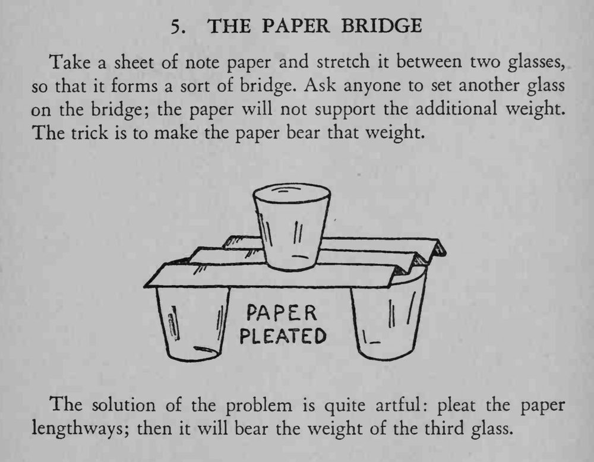

一张纸搭在两个杯子上成桥，放上第三个杯子竟不会塌。
褶要折得密而均匀，让许多小立面一起承重。

Take a sheet of note paper and stretch it between two glasses, so that it forms a sort of bridge. Ask anyone to set another glass on the bridge; the paper will not support the additional weight. The trick is to make the paper bear that weight. The solution of the problem is quite artful: pleat the paper lengthways; then it will bear the weight of the third glass.